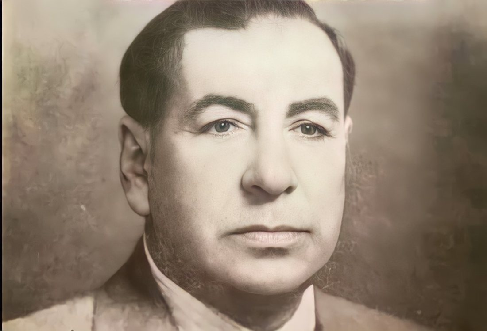
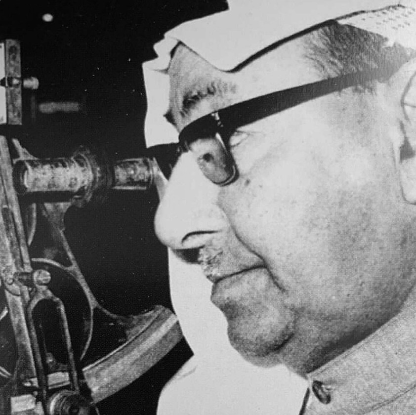
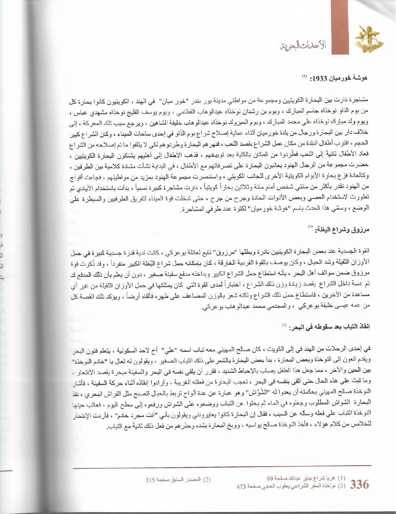

1915 to 1967
Abdulwahab bin Eissa and the boom Bin Rushdan
Eissa took his son Abdulwahab to sea at ten, then sent him to learn under his uncle Abdulaziz. In 1915, at seventeen, Abdulwahab became a nakhuda for the first time, after a group of Kuwaiti nakhudas in India examined him on navigation and position finding. He sailed his father's boom to India through the First World War. The merchant Mohammed Thunayan Al-Ghanim then chose him to command the famous Bin Rushdan, and he made her Kuwait's leading ship of the 1930s on voyages to India, Yemen and East Africa. The Al Zayed book adds that he improved the rigging of his ship so that the sail was lighter for the crew to raise.
He saw for himself what the First World War meant for Kuwaiti sail. In a 1962 interview with Redha Al-Faili he said: «When the Great War broke out, the British navy took control of all the steamers, and steamers stopped coming to every port in the Gulf. So the Kuwaiti fleet rose to supply the whole Gulf. That was the greatest role the fleet ever played: it fed the Gulf, the Arabian Peninsula, Iraq and Iran. Without the Kuwaiti fleet in that war there would have been a crisis with terrible results.» Demand was so great, he said, that Kuwaitis had large ships built in a hurry in Malabar, and this saved the Gulf and Arabia from famine.
In 1936 Mohammed Thunayan Al-Ghanim put him at the head of the nakhudas sent to rescue the damaged boom Walad Mubarak. In 1938 he was one of four nakhudas Sheikh Ahmad Al-Jaber sent to be tested by the captain of the British sloop Shoreham, and he received a certificate of excellence in navigation. The Landmarks of Old Kuwait Town dates the certificate from the British fleet command to July 1938, given to honour him as he gave up voyaging that year. That same year he handed Bin Rushdan to his brother Yousef and became Director General of the Kuwait Municipality.
During the Majlis events of 1939 he left Kuwait for Basra, returned in 1943 and traded between Kuwait and India. In 1948 he added a supplement on fishing, voyaging and sea trade to his father's Dalil Al-Muhtar, and in 1965 Kuwait Television recorded him for Pages from Kuwait's History. When Alan Villiers came back to Kuwait in 1967, Abdulwahab was too ill to receive him, and Villiers wrote that this great nakhuda had left a good book which, with his own Sons of Sinbad, was among the last records of Kuwait's sailing history. Abdulwahab died in December 1967 and was buried in Kuwait.




Documents for this part
- Yousef and Abdulwahab, sons of Eissa, divide everything they owned together
- Heirs register of Abdulwahab bin Eissa Al-Qatami
Sources
- Al-Hijji, Nawakhidhat Al-Safar Al-Shira'i, pages 46 to 48 (Al-Hijji gives the date of death as 16 December 1967)
- Yousef Mohammed Saqr Al-Jasser Al-Ghanim, Al Zayed: Tarikh wa Rijal, 2006, page 27
- Dr Faisal Adel Al-Wazzan, Tijarat Al-Naql Al-Bahri, 2019, page 9, quoting the 1962 interview of Nakhuda Abdulwahab Al-Qatami by Redha Al-Faili
- Ma’alim Madinat Al-Kuwait Al-Qadima, part 7, page 43, footnote 19
- Alan Villiers, Sons of Sinbad, introduction to the later edition, as quoted by Al-Hijji